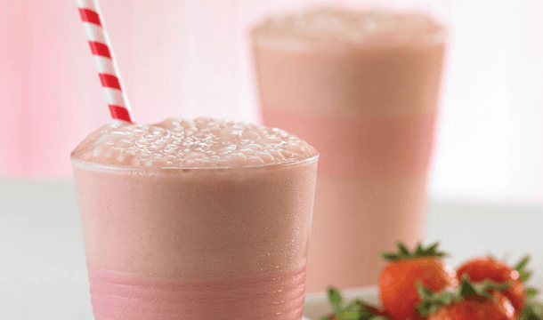

◖Coffrey◗
Chocomilk-strawberry
Ingredients:
2 cups Milk
1 cup Strawberry chopped
2 tablespoons Cocoa powder
2 tablespoons Sugar
1/2 cup Ice
Preparation:
Blend milk with strawberries and cocoa. Add the sugar and ice little by little ..
Serve and decorate with sliced strawberries.
